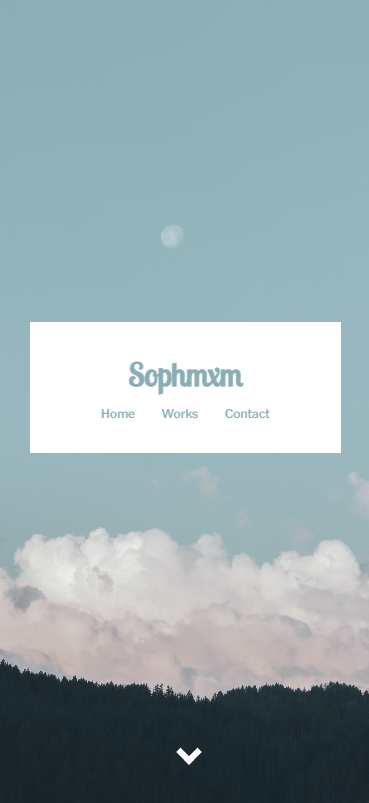
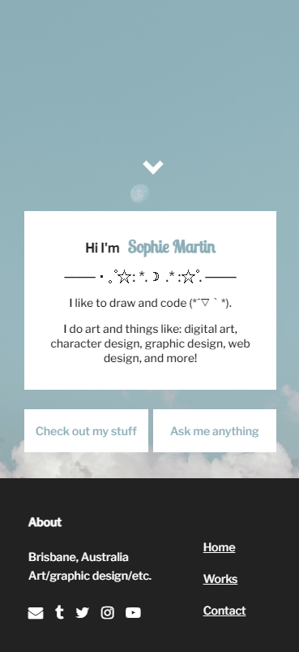

Catch 'n Bake
Using only p5.js, an open-source JavaScript library that turns code into art, and hand-drawn assets, this minigame was produced for an exhibition in Fortitude Valley with the goal of interesting and engaging visitors to the lane. The work was exhibitied on a Creative Coding Cabinet which featured a joystick and three buttons.
Unit: DXB211 Creative Coding
Grade: High distinction
Live preview
Process document
Code
React Application
Within this web application, our focus was to build a client-side React application with server-side Express features using an online database focused around Volcanos around the world.
Unit: CAB230 Web Computing
Grade: Distinction
Report document
Pets Near Me
An interactive high-fidelity web-based prototype implemented in HTML and CSS that shows attention to interfaces, navigation structure, delivery, and technically proficient embedding of assets. This website includes a responsive design that considers the elements and principles of design, and that was tested and is fully accessible using a screen reader.
This project is accompanied with a written design rationale that details the process and decisions on how the conceptual design was translated into a web-based prototype.
Unit: DXB111 Introduction to Web Design
Grade: High distinction
Live preview
Rationale document
Code


Mobile portfolio
An initial web-based prototype developed using HTML and CSS that demonstrates translating a concept into an effective web-based prototype. This website was intended to be non-responsive and was designed for phone displays.
Unit: DXB111 Introduction to Web Design
Grade: High distinction
Live preview
Code
Ocean graphical webpage
A fun graphics-focused webpage design that utilises SVGs and CSS animations to bring it to life. This webpage is best displayed on a desktop.
Live preview
Code